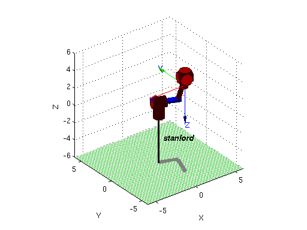
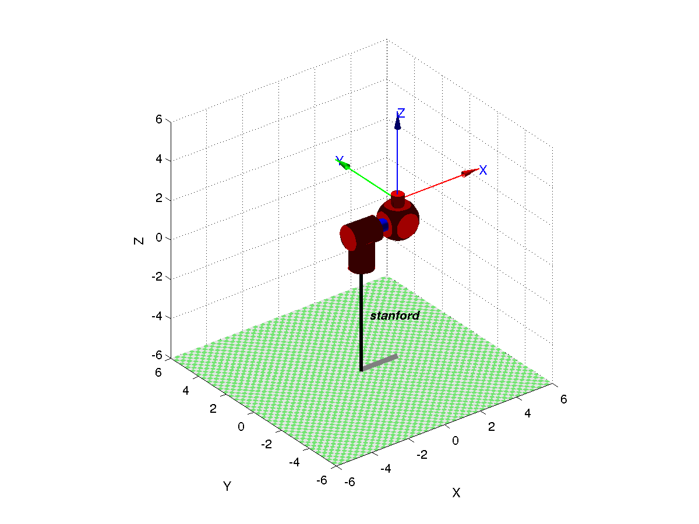

Contents
Load robotics toolbox
clc, clear all, close all addpath('../rvctools') startup_rvc
Robotics, Vision & Control: (c) Peter Corke 1992-2011 http://www.petercorke.com - Robotics Toolbox for Matlab (release 9.10) - pHRIWARE (release 1.1): pHRIWARE is Copyrighted by Bryan Moutrie (2013-2015) (c) Run rtbdemo to explore the toolbox
Smaller precision for easier visualization
old = digits(6);
Find transformation matrix
d1 = 1; d2 = 2; d6 = 1; % We define pi as a symbolic in order to eliminate numeric errors in the % calculation of our matrixes syms d3 t1 t2 t4 t5 t6 pi; T01 = (simplify(transl(0,0,d1)*trotz(t1+pi/2)*transl(0,0,0)*trotx(pi/2))); T12 = (simplify(transl(0,0,d2)*trotz(t2+pi)*transl(0,0,0)*trotx(pi/2))); T23 = (simplify(transl(0,0,d3)*trotz(pi)*transl(0,0,0)*trotx(pi/2))); T03 = vpa(simplify(T01*T12*T23)) T34 = (simplify(transl(0,0,0)*trotz(t4+pi/2)*transl(0,0,0)*trotx(pi/2))); T45 = (simplify(transl(0,0,0)*trotz(t5+pi/2)*transl(0,0,0)*trotx(pi/2))); T56 = (simplify(transl(0,0,d6)*trotz(t6)*transl(0,0,0)*trotx(0))); T36 = vpa(simplify(T34*T45*T56)) % Find the rotation matrixes R03 = T03(1:3, 1:3) R36 = T36(1:3, 1:3) clear pi
T03 = [ -1.0*cos(t2)*sin(t1), sin(t1)*sin(t2), cos(t1), 2.0*cos(t1) + d3*sin(t1)*sin(t2)] [ cos(t1)*cos(t2), -1.0*cos(t1)*sin(t2), sin(t1), 2.0*sin(t1) - 1.0*d3*cos(t1)*sin(t2)] [ sin(t2), cos(t2), 0, d3*cos(t2) + 1.0] [ 0, 0, 0, 1.0] T36 = [ cos(t4)*sin(t6) + cos(t6)*sin(t4)*sin(t5), cos(t4)*cos(t6) - 1.0*sin(t4)*sin(t5)*sin(t6), -1.0*cos(t5)*sin(t4), -1.0*cos(t5)*sin(t4)] [ sin(t4)*sin(t6) - 1.0*cos(t4)*cos(t6)*sin(t5), cos(t6)*sin(t4) + cos(t4)*sin(t5)*sin(t6), cos(t4)*cos(t5), cos(t4)*cos(t5)] [ cos(t5)*cos(t6), -1.0*cos(t5)*sin(t6), sin(t5), sin(t5)] [ 0, 0, 0, 1.0] R03 = [ -1.0*cos(t2)*sin(t1), sin(t1)*sin(t2), cos(t1)] [ cos(t1)*cos(t2), -1.0*cos(t1)*sin(t2), sin(t1)] [ sin(t2), cos(t2), 0] R36 = [ cos(t4)*sin(t6) + cos(t6)*sin(t4)*sin(t5), cos(t4)*cos(t6) - 1.0*sin(t4)*sin(t5)*sin(t6), -1.0*cos(t5)*sin(t4)] [ sin(t4)*sin(t6) - 1.0*cos(t4)*cos(t6)*sin(t5), cos(t6)*sin(t4) + cos(t4)*sin(t5)*sin(t6), cos(t4)*cos(t5)] [ cos(t5)*cos(t6), -1.0*cos(t5)*sin(t6), sin(t5)]
Inverse kinematics
O = [1; -3; 4]
R = [-1, 0, 0;
0, 1, 0;
0, 0, -1]
Oc = O - d6*R*([0; 0; 1]);
xc = Oc(1);
yc = Oc(2);
zc = Oc(3);
teta1 = atan2(yc, xc) - atan2(-sqrt(xc^2 + yc^2 - d2^2), d2)
teta2 = pi/2 - atan2(zc - d1, sqrt(xc^2 + yc^2 - d2^2))
de3 = sqrt(xc^2 + yc^2 - d2^2 + (zc-d1)^2)
% Insert this values into R03 and R36 matrix
R03r = subs(R03, t1, teta1);
R03r = subs(R03r, t2, teta2);
R03r = subs(R03r, d3, de3);
% From the equation R36 == Rmul, we can find an analytical solution
% represented by the following code
Rmul = vpa(simplify(R03r'*R));
if(Rmul(1,3) == 0 && Rmul(2,3) == 0)
if(Rmul(3,3) ==1)
teta5 = pi/2
teta4 = 0
teta6 = eval(atan2(Rmul(2,2),-Rmul(2,1)))
else
teta5 = -pi/2
teta4 = eval(atan2(Rmul(2,2),Rmul(2,1)))
teta6 = 0
end
else
teta5 = eval(atan2(Rmul(3,3),sqrt(1-Rmul(3,3)^2)))
teta4 = eval(atan2(-Rmul(1,3),Rmul(2,3)))
teta6 = eval(atan2(-Rmul(3,2),Rmul(3,1)))
end
O =
1
-3
4
R =
-1 0 0
0 1 0
0 0 -1
teta1 =
-0.3630
teta2 =
0.5495
de3 =
4.6904
teta5 =
0
teta4 =
2.5921
teta6 =
2.7786
Create model so we can visualize this robot
L1 = Link([0, d1, 0, pi/2, 0]) ; L2 = Link([0, d2, 0, pi/2, 0]) ; L3 = Link([pi, 0, 0, pi/2, 1]) ; L4 = Link([0, 0, 0, pi/2, 0]) ; L5 = Link([0, 0, 0, pi/2, 0]) ; L6 = Link([0, d6, 0, 0, 0]) ; bot = SerialLink([L1, L2, L3, L4, L5, L6], 'name', 'stanford') bot.plotopt={'workspace', [-6 6 -6 6 -6 6], 'movie', 'animation'}; q0 = [pi/2, pi, 0, pi/2, pi/2, 0]; % Offset of the initial state. q = jtraj(q0, [teta1, teta2, de3, teta4, teta5, teta6]+q0, [0:0.05:2]'); %Show foward kinematics for the desired final position so we can verify if %it is working correctly foward_kin = bot.fkine([teta1, teta2, de3, teta4, teta5, teta6]+q0) bot.plot(q);
bot =
stanford (6 axis, RRPRRR, stdDH, slowRNE)
+---+-----------+-----------+-----------+-----------+-----------+
| j | theta | d | a | alpha | offset |
+---+-----------+-----------+-----------+-----------+-----------+
| 1| q1| 1| 0| 1.571| 0|
| 2| q2| 2| 0| 1.571| 0|
| 3| 3.142| q3| 0| 1.571| 0|
| 4| q4| 0| 0| 1.571| 0|
| 5| q5| 0| 0| 1.571| 0|
| 6| q6| 1| 0| 0| 0|
+---+-----------+-----------+-----------+-----------+-----------+
grav = 0 base = 1 0 0 0 tool = 1 0 0 0
0 0 1 0 0 0 1 0 0
9.81 0 0 1 0 0 0 1 0
0 0 0 1 0 0 0 1
foward_kin =
-1.0000 -0.0000 0.0000 1.0000
-0.0000 1.0000 0.0000 -3.0000
-0.0000 0.0000 -1.0000 4.0000
0 0 0 1.0000
 Old precision settings
digits(old)
Turn the plot into an animation
!convert -delay 5 animation/* animation.gif
Robot animation
